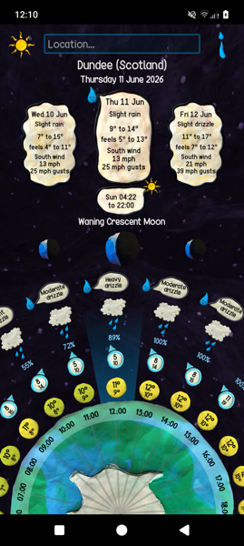
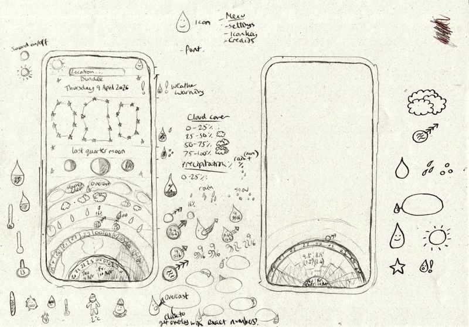
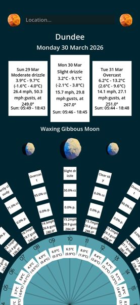
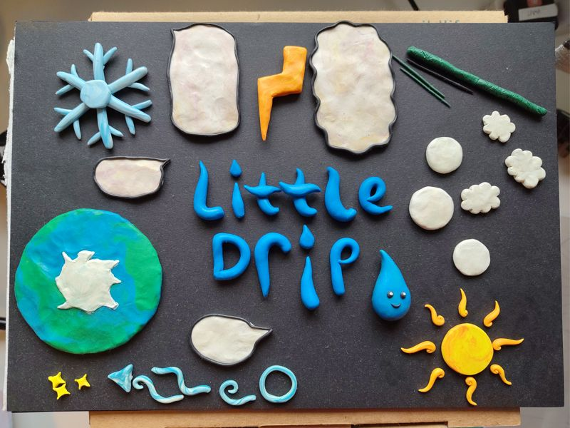

Little Drip
Jun 2026
A weather app made of clay!

Click here to view / download: --> Little Drip on itch.io
Why make my own weather app? Well, why not.
Also:
- I wanted a project to learn Godot Engine with, and to explore generally using more open-source tools.
- I wanted to make a pretty and non-bloated app for one of my partners who wasn't a fan of the recent Met Office app update, which was full of bloat and hard to navigate.
- I finally felt ready to start coding for fun again after being burnt out for quite a while!
So I looked into various weather APIs, starting with the Met Office's API, which is probably fine but is limited to 360 API calls a day. I didn't want to run the risk of exceeding that,
so I kept looking and found Open Meteo, which doesn't have a daily limit, and also doesn't require an API key which was a nice bonus!
I found their docs page incredibely useful for testing which parameters I wanted to include and had fun making a big list of all the parameters I might want,
and then whittling it down to the ones I would realistically use.
I also switched over to Linux (well, half of my computer anwyay) during development, which is going well so far. I'm on Ubuntu now,
but might switch to something else in future once I'm more familiar with Linux.
The project was originally called 'Whatever Weather', like 'whatever the weather', but also like, whatever.
Here is a sketch I did of the layout. I found it useful to draw around my phone so I had a 1-1 scale to try out a UI design on.

I did this design before doing any coding so that I knew where I was headed, and then when I moved to Godot I started with text only until I had made sure I was able to request all the data I needed from the API,
so it was pretty unusable at first and was basically a spreadsheet with tiny text so that I could fit 24 hours of data on one screen. (I can't find any screenshots of this version sadly)
Next I made a 'greybox' version of the UI to test the layout and readability before spending time on clay assets.

And here they are - all the plasticine things I made for the app, do you recognise them? Actually some of them didn't get used in the end. I changed the wind icon a lot. It was really difficult to design something that suggested
wind speed, gust, and direction in an icon without text, so I ended up including text and using a very similar design to other weather apps. But anyway here are the little clay things!

I also used a clay spacebackground that I made years ago and have used in many projects since,
and fit with the design I had of the Earth at the bottom of the screen, going up through the atmosphere, past the moon and out into the night sky!
After that I spent a while polishing and bug-fixing (90% issues to do with rotation, as is always the case) and doing things like adjusting the maths for local timezones.
The main feature I didn't add that I wanted to add was an inbuilt compass so you can see which way the wind direction is actually coming from. But, turns out that also involved more rotation maths, so,
I will not be adding that. But, overall, I think it's a pretty cool app and it's super functional for me, so I'm happy!